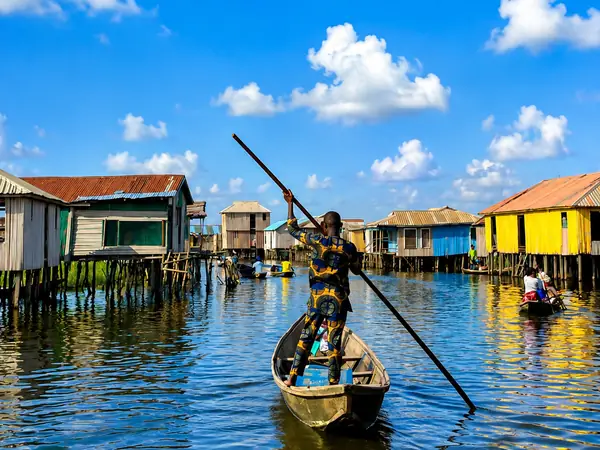

Jour 1
Ganvié et Ouidah
Prise en charge à l’hôtel en véhicule privé avec chauffeur-guide et transfert à Abomey-Calavi. Visite de Ganvié en pirogue motorisée privée : quartiers lacustres, techniques de pêche, akadjas, marché flottant et canal des Amoureux. Départ pour Ouidah, déjeuner, Forêt sacrée de Kpassè, Temple des Pythons, Place aux Enchères, Route des Esclaves, Arbre de l’Oubli, Arbre du Retour et Porte du Non-Retour. Retour à Cotonou.